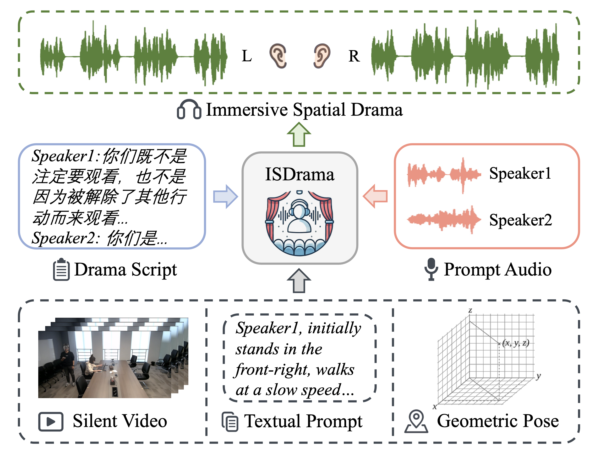
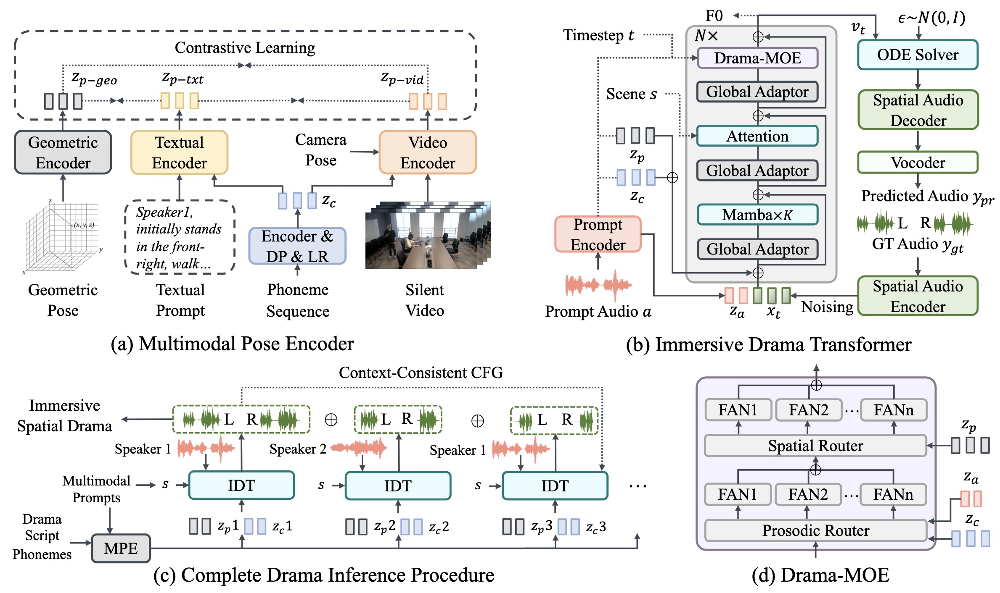

Abstract. Multimodal immersive spatial drama generation focuses on creating continuous multi-speaker binaural speech with dramatic prosody based on multimodal prompts, with potential applications in AR, VR, and others. This task requires simultaneous modeling of spatial information and dramatic prosody based on multimodal inputs, with high data collection costs. To the best of our knowledge, our work is the first attempt to address these challenges. We construct MRSDrama, the first multimodal recorded spatial drama dataset, containing binaural drama audios, scripts, videos, geometric poses, and textual prompts. Then, we propose ISDrama, the first immersive spatial drama generation model through multimodal prompting. ISDrama comprises these primary components: 1) Multimodal Pose Encoder, based on contrastive learning, considering the Doppler effect caused by moving speakers to extract unified pose information from multimodal prompts. 2) Immersive Drama Transformer, a flow-based mamba-transformer model that generates high-quality drama, incorporating Drama-MOE to select proper experts for enhanced prosody and pose control. We also design a context-consistent classifier-free guidance strategy to coherently generate complete drama. Experimental results show that ISDrama outperforms baseline models on objective and subjective metrics.

In this paper, we first introduce MRSDrama, the first multimodal recorded spatial drama dataset, comprising binaural drama audios, scripts, videos, geometric poses, and textual prompts. The dataset includes 97.82 hours of speech data recorded by 21 speakers across three scenes. Next, we propose ISDrama, the first immersive spatial drama generation model based on multimodal prompting. ISDrama generates high-quality, continuous, multi-speaker binaural speech with dramatic prosody and spatial immersion, driven by multimodal prompts. To extract a unified pose representation from multimodal prompts, we design the Multimodal Pose Encoder, a contrastive learning-based framework that encodes not only position and head orientation but also radial velocity, accounting for the Doppler effect caused by moving speakers. Meanwhile, we develop the Immersive Drama Transformer, a flow-based Mamba-Transformer model capable of generating immersive spatial drama effectively and stably. Within this model, we introduce Drama-MOE (Mixture of Experts), which selects the appropriate experts to enhance prosodic expressiveness and improve pose control. Then, we adopt a context-consistent classifier-free guidance (CFG) strategy to ensure the quality and coherence of complete drama generation.

In this section, we present generated samples of continuous multi-speaker binaural speech with dramatic prosody with silent video input.
We input the drama script as content, the prompt audios to specify timbres of different speakers, the silent video (and camera direction) as the pose prompt and scene information, then ISDrama generates the immersive spatial drama.
In this section, we present generated samples of single binaural speech with dramatic prosody for better comparison with baseline models.
We input the drama script as content, the prompt audios to specify timbre, geometric pose (3D position and quaternion orientation) as the pose prompt, and scene information, then ISDrama generates the binaural audio.
The actual geometric pose is provided as frame-level sequences, and here we present the video for better understanding.
| ISDrama(ours) | CosyVoice | FireRedTTS | F5-TTS |
|---|---|---|---|
Audio Quality: Successfully learn timbre and prosody from audio prompts, and effectively generate regretful emotions that align with the script content;
Spatialization: Compared to other baselines, our model achieves smoother and more natural motion from left to right, providing enhanced pose perception.
| ISDrama(ours) | CosyVoice | FireRedTTS | F5-TTS |
|---|---|---|---|
Voice Quality: Successfully transfer timbre information from audio prompts to the synthesized audio, generating smooth and natural sentences with a hint of sarcastic and teasing emotion;
Spatialization: Our model successfully control the natural change in sound as the speaker moves from back to front, providing listeners with a more realistic pose perception.
| ISDrama(ours) | CosyVoice | FireRedTTS | F5-TTS |
|---|---|---|---|
Voice Quality: Successfully transfer the timbre and pronunciation, achieving a deep and sorrowful emotion that aligns with the script content;
Spatialization: Our model effectively models the spatial information of the speaker pacing from right to left, achieving a natural and realistic spatial positioning effect.
| ISDrama(ours) | CosyVoice | FireRedTTS | F5-TTS |
|---|---|---|---|
Voice Quality: Successfully transfer the timbre and pronunciation demonstrated in the audio prompts, generating high-expressiveness speech with an anxious emotion that aligns with the script content;
Spatialization: Our model authentically reflects the speaker's rapid position changes moving from left to right, with the synthesized audio providing smoother and more natural spatial perception.
In this section, we present generated samples of continuous multi-speaker binaural speech with dramatic prosody with textual prompts.
We input the drama script as content, the prompt audios to specify timbres of different speakers, textual prompt for each actor's line as the pose prompt, and scene information, then ISDrama generates the immersive spatial drama.
@inproceedings{Zhang_2025,
series = {MM ’25},
title = {ISDrama: Immersive Spatial Drama Generation through Multimodal Prompting},
url = {http://dx.doi.org/10.1145/3746027.3755014},
DOI = {10.1145/3746027.3755014},
booktitle = {Proceedings of the 33rd ACM International Conference on Multimedia},
publisher = {ACM},
author = {Zhang, Yu and Guo, Wenxiang and Pan, Changhao and Zhu, Zhiyuan and Jin, Tao and Zhao, Zhou},
year = {2025},
month = Oct,
pages = {9618–9627},
collection = {MM ’25}
}